Gallery
Photographs of former Long Lines microwave stations, horn-reflector antennas, and equipment buildings. Locations are volunteer-documented field sites, not an official AT&T collection.
Community photographs
Submitted from Discord by the L5 bot. Each image is credited as Photo: name. Approved pictures go live a few per hour instead of all at once.
Loading community photographs…
Site collection
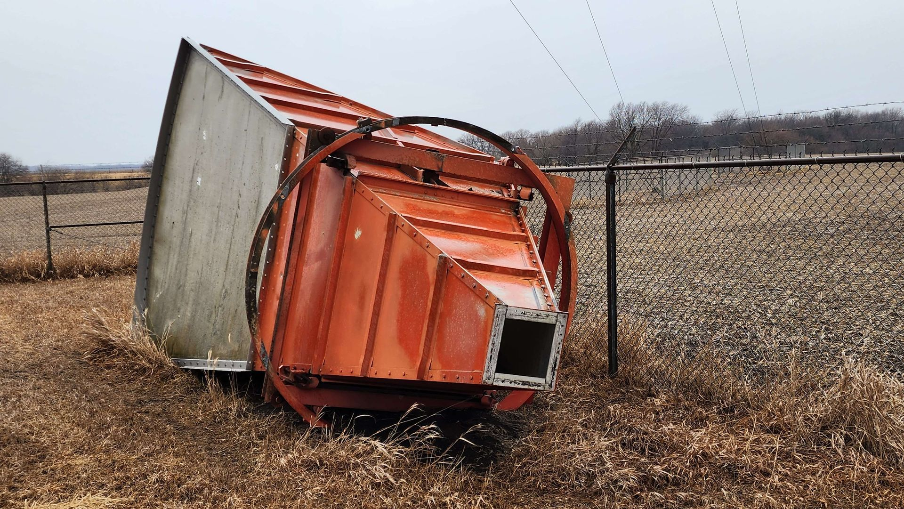
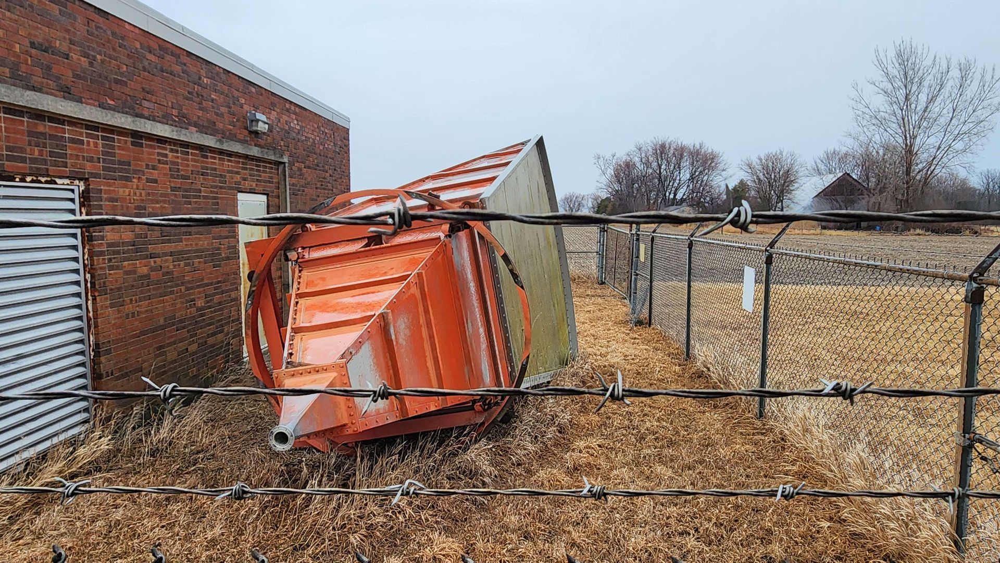
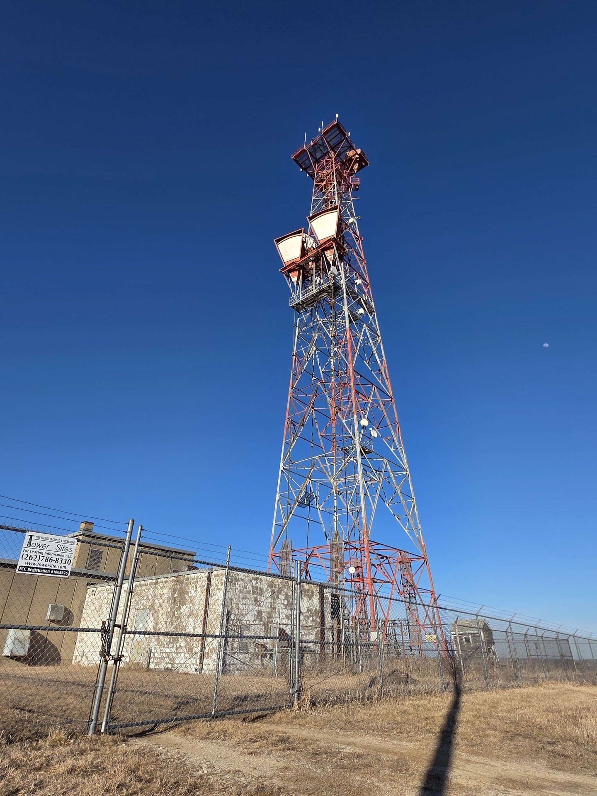
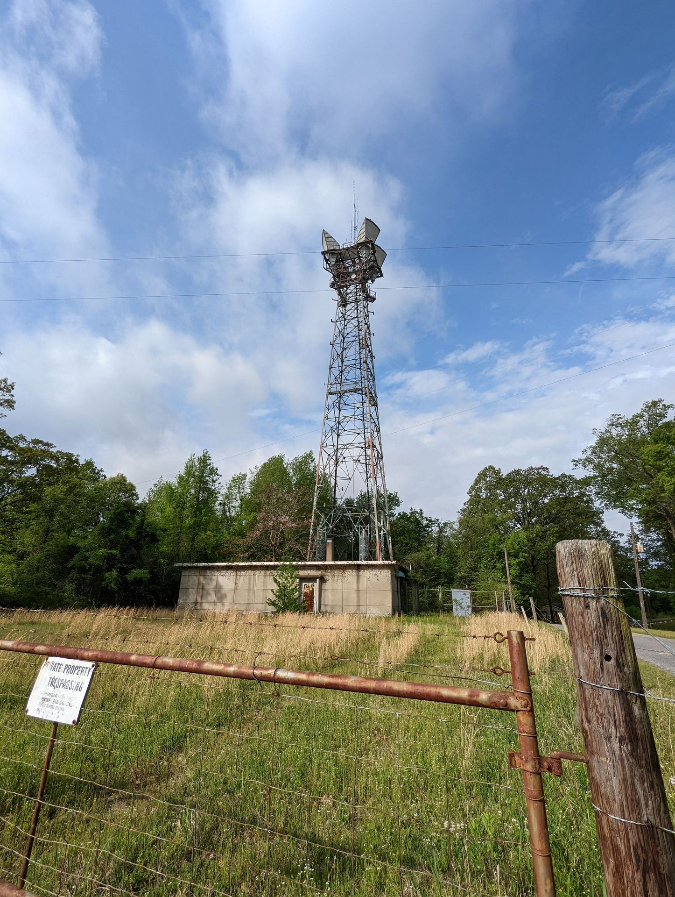
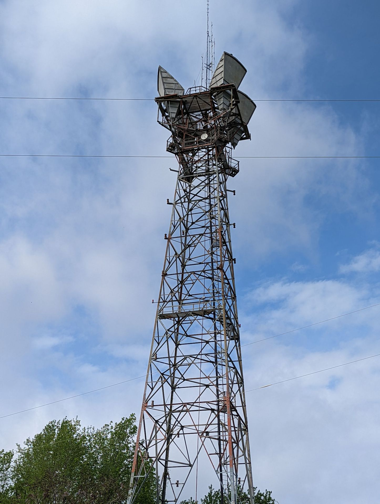
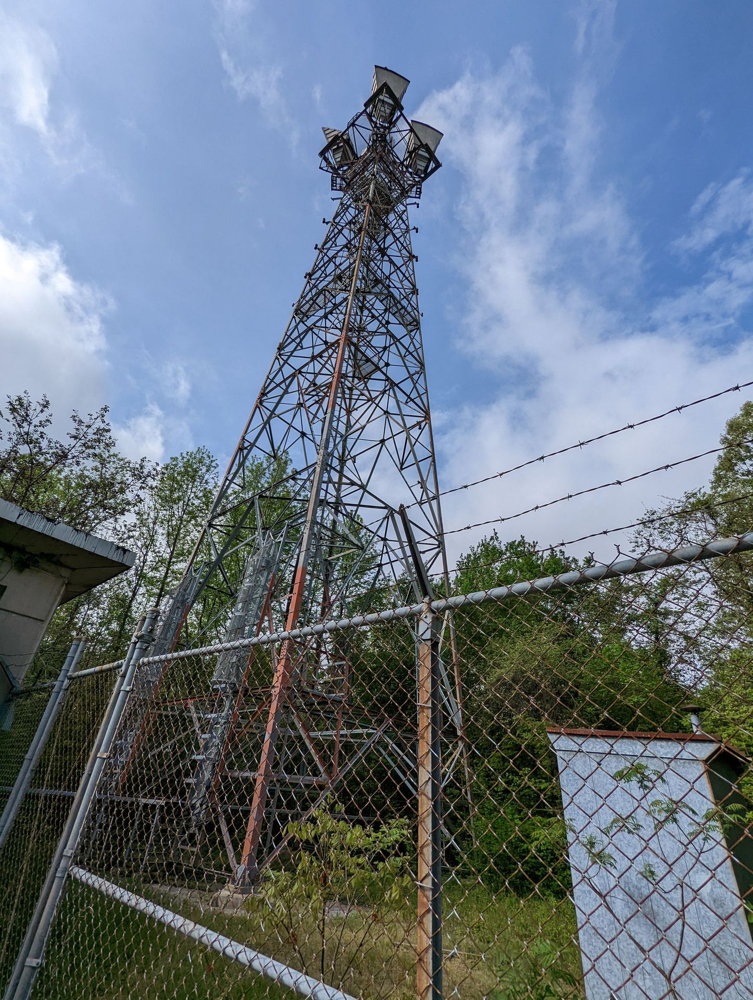
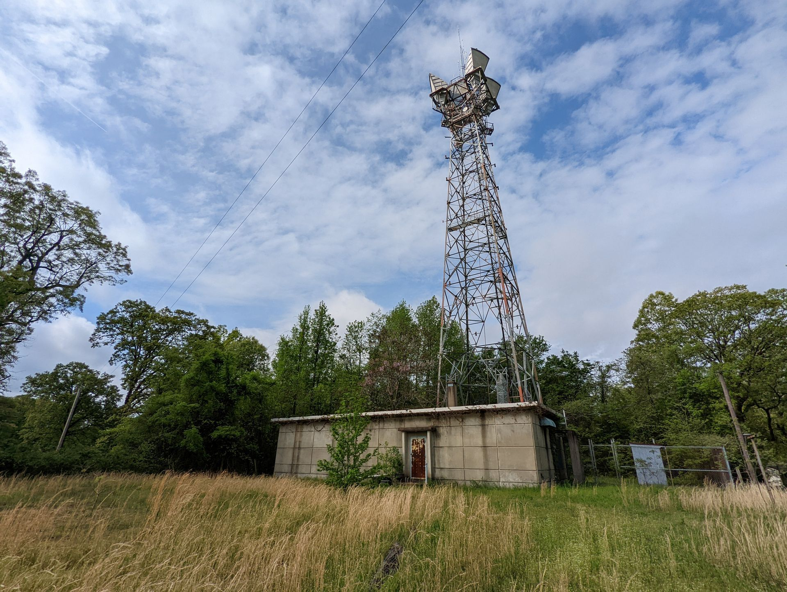
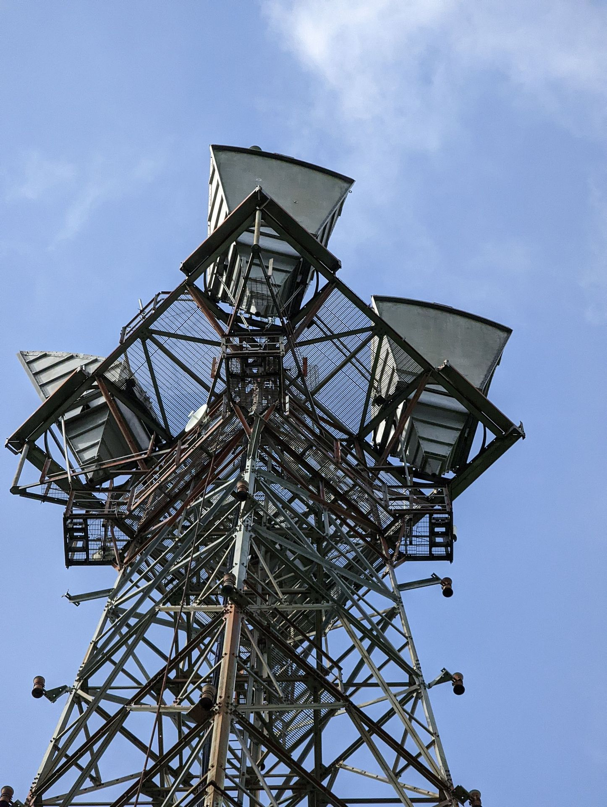
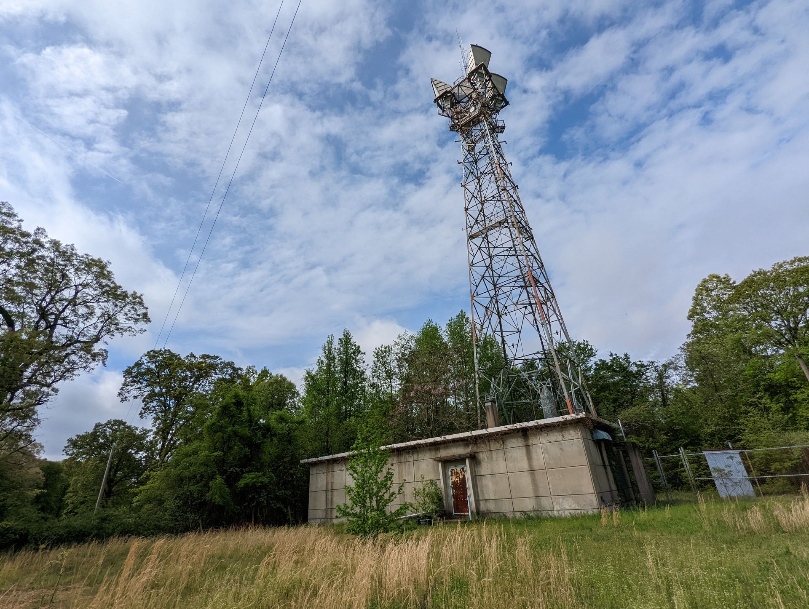
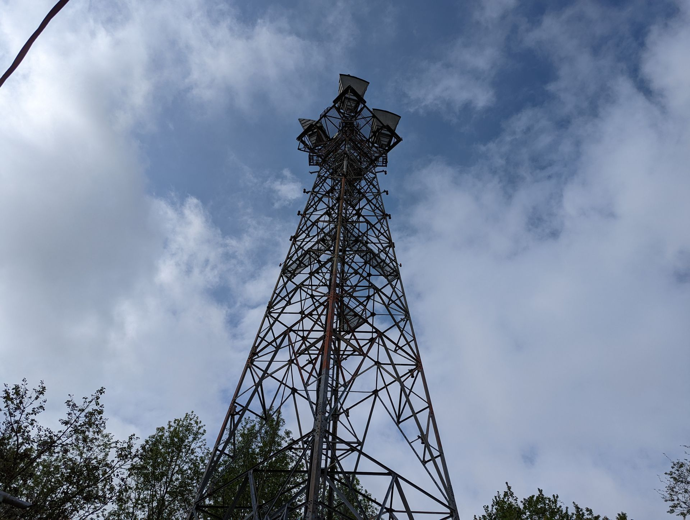
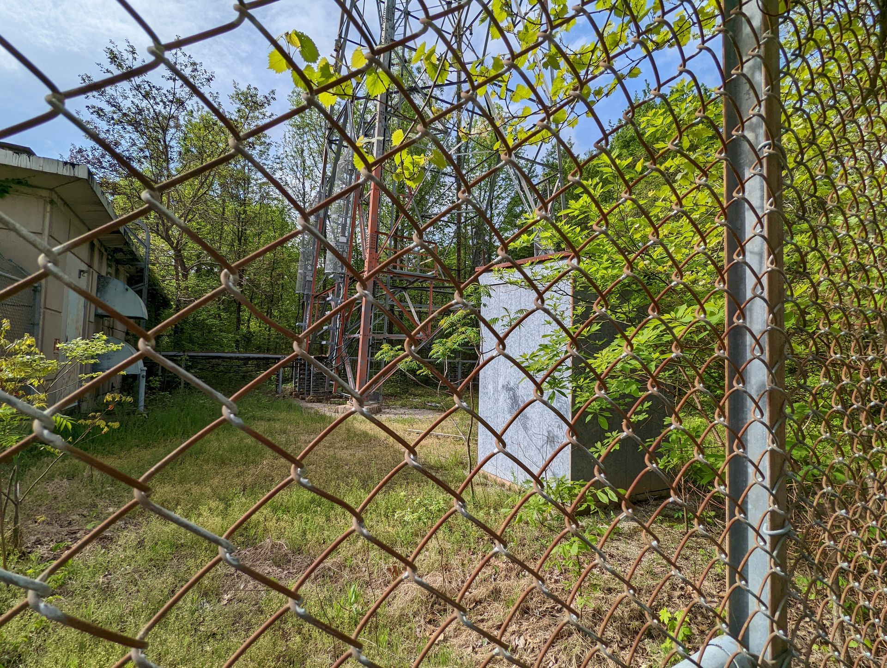
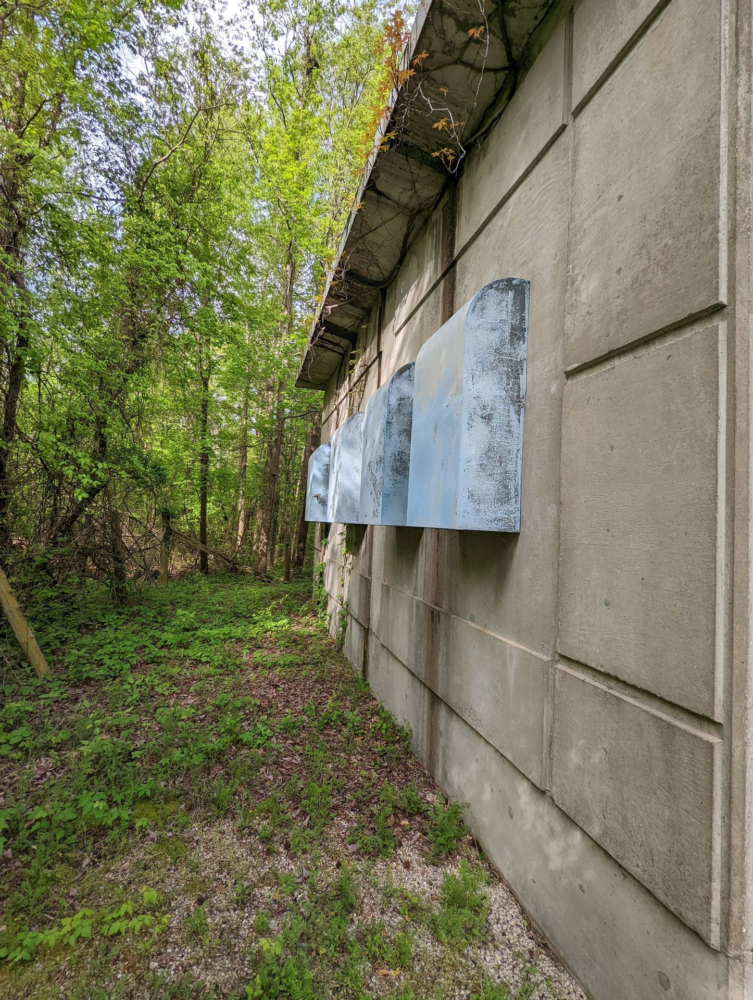
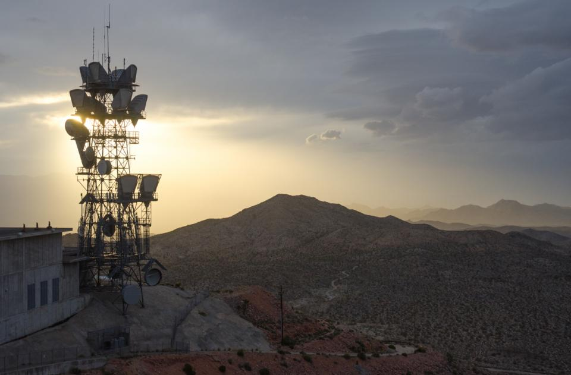
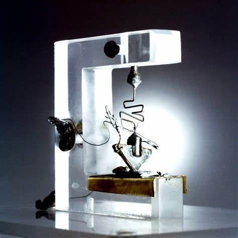

If you have additional photographs, see Contribute.